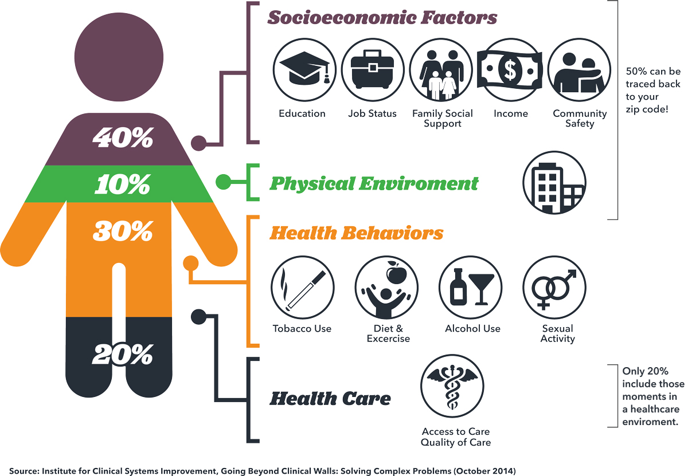

Causes of Health and Well-Being Challenges
The challenges to health and well-being are multifaceted, stemming from a range of interconnected factors:
- Socioeconomic Inequalities: Barriers to accessing healthcare, education, and nutritious food disproportionately affect vulnerable populations.
- Environmental Factors: Pollution and climate change contribute to the rising burden of diseases.
- Mental Health: Stigma and lack of resources exacerbate mental health crises, often overlooked in public health discussions.
- Inadequate Infrastructure: Insufficient investment in public health systems hinders effective responses to health emergencies.
Addressing these root causes is vital to creating a healthier, more equitable world for all.
Multimedia Resources

Unhealthy Food Choices
Things you can do to improve your health
Causes
Health Tips
- Stay hydrated: Drink at least 8 glasses of water a day.
- Eat a balanced diet: Include fruits, vegetables, whole grains, and lean proteins.
- Exercise regularly: Aim for at least 150 minutes of moderate aerobic activity each week.
- Get enough sleep: Adults should aim for 7-9 hours of quality sleep per night.
- Practice mindfulness: Engage in meditation or yoga to reduce stress.
- Stay connected: Maintain social connections for emotional support and mental health.